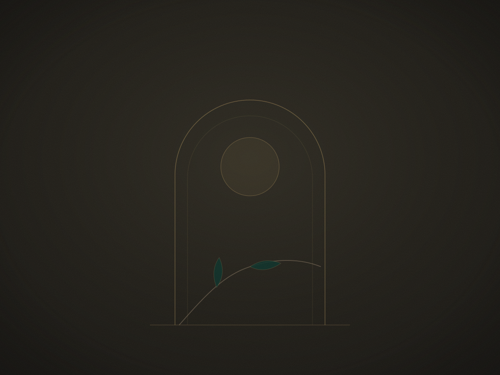

Make yourself at home. Don’t touch anything.

I’m Lea — a writer, maker, and collector of things that feel like they carry a history. I make witch spell kits, write dark fantasy fiction, and find strange and beautiful objects that needed a new home. None of these things are contradictions — they’re just what happens when you take your interests seriously and your aesthetic very seriously.
This site is a style collective, a blog, and a cabinet of curiosities. It’s for people drawn to the darker, quieter, more intentional corners of life — the ones who linger a little too long in the wrong aisle, who have a crystal for every occasion and a reason for all of it.
The spell kits are over at The Dark and Wild. Everything else is here.
Make yourself at home. Don’t touch anything.
— Lea
hello@thedarkandwild.com @leathewitch